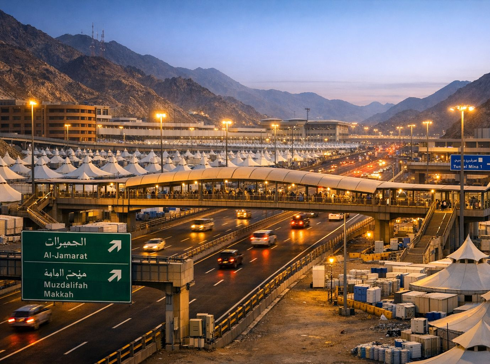

Haji Mabrur
Urutan dasar pelaksanaan ibadah haji yang mabrur (yang diterima) mengikuti manasik (tata cara) yang telah ditetapkan berdasarkan syariat Islam.

Secara garis besar, untuk haji Tamattu' (yang paling umum dilakukan jamaah Indonesia), jamaah melakukan Umrah terlebih dahulu, kemudian membuka pakaian ihram, lalu mengenakannya lagi untuk Haji, urutannya adalah:
1. Ihram dari Miqat (Untuk Umrah)
Di miqat (Bir Ali atau bandara), Mandi sunnah, memakai pakaian ihram. Niat Umrah dengan mengucapkan "Labbaik Allahumma 'Umran".
Mulai bertalbiyah untuk umrah.
2. Tawaf Qudum (Tawaf Kedatangan) di Makkah (disunahkan, bukan rukun)
Setiba di Makkah, melakukan tawaf mengelilingi Ka'bah 7 putaran.
Kemudian:
- Shalat 2 rakaat di belakang Maqam Ibrahim (jika memungkinkan).
- Minum air zamzam.
Saat akan mulai berjalan mengelilingi Ka'bah (tawaf umrah), talbiyah dihentikan dan diganti dengan doa iftitah/ziarah tawaf.
3. Sa'i antara Shafa dan Marwah
Berlari-lari kecil (sa'i) dari bukit Shafa ke Marwah sebanyak 7 kali (dimulai dari Shafa, berakhir di Marwah).
Sa'i (sa'i umrah) dilakukan setelah tawaf qudum.
4. Tahallul
Setelah sa'i, jamaah tahallul (umrah) dan memendekkan rambut.
Setelah ini, status ihram berubah menjadi "umrah selesai" dan boleh melakukan semua hal yang sebelumnya dilarang selama ihram (seperti memakai pakaian biasa, memakai wangi-wangian, dll) hingga nanti masuk kembali ke ihram untuk haji pada tanggal 8 Dzulhijjah.
5. Kembali ke keadaan ihram untuk Haji pada 8 Dzulhijjah (Tarwiyah)
Di pondokan masing-masing, mandi, memakai pakaian ihram lagi, dan niat Haji dengan mengucapkan "Labbaik Allahumma Hajjan".
- Mulai bertalbiyah untuk Haji.
- Berangkat menuju Mina sebelum waktu Zhuhur dan bermalam di sana.
...dari Abu Bakar Ash-Shiddiq: Rasulullah ﷺ ditanya tentang haji yang utama? Beliau menjawab, "Mengeraskan bacaan talbiyah dan menyembelih binatang. "
Shahih: Ibnu Majah (2924)
6. Wukuf di Arafah (9 Dzulhijjah) – RUKUN HAJI
Berada di padang Arafah mulai dari tergelincir matahari (setelah Zhuhur) hingga terbit fajar 10 Dzulhijjah.
- Disunahkan untuk banyak berdoa, dzikir, istighfar.
- Wukuf adalah inti haji. Tanpanya, haji tidak sah.
7. Mabit (bermalam) di Muzdalifah (malam 10 Dzulhijjah)
Setelah matahari terbenam di Arafah, berangkat ke Muzdalifah.
- Shalat Maghrib dan Isya (jamak qashar) dilaksanakan di Muzdalifah.
- Bermalam hingga sebelum terbit fajar, disunahkan mengumpulkan kerikil untuk lempar jumrah (7 butir atau lebih).
Boleh langsung berangkat ke Mina setelah tengah malam bagi yang lemah (lansia, sakit, wanita, anak-anak).
8. Melempar Jumrah Aqabah (Jamarat Al-Kubra) di Mina (10 Dzulhijjah – Hari Nahr)
Setelah terbit matahari (waktu dhuha), melempar 7 kerikil ke Jumrah Aqabah sambil bertakbir.
Talbiyah berakhir sampai saat melempar Jumrah Aqabah pada tanggal 10 Dzulhijjah ini. Ketika hendak melempar kerikil pertama ke Jumrah Aqabah, talbiyah dihentikan. Saat itulah mulai bertakbir ("Allahu Akbar") bersamaan dengan lemparan.
Kemudian:
- Menyembelih dam/hady
Jangan bercukur dan mengganti pakaian ihram sebelum hewan hadyu/dam ini sampai ditempat penyembelihan.
- Setelah itu, tahallul & mencukur/ memotong rambut – disini disebut Tahallul Awwal (haji).
Setelah tahallul awwal, semua larangan ihram telah hilang kecuali berhubungan suami-istri.
9. Tawaf Ifadhah (Tawaf Haji) dan Sa'i Haji – RUKUN HAJI
Pergi ke Makkah untuk melakukan Tawaf Ifadhah (mengelilingi Ka'bah 7 putaran).
- Dilanjutkan dengan Sa'i (sa'i haji).
- Lalu Tahallul Tsani.
Setelah tahallul tsani, semua larangan ihram termasuk hubungan suami-istri telah halal, namun tidak perlu bercukur lagi.
10. Mabit di Mina pada Hari Tasyrik (11, 12, 13 Dzulhijjah)
Kembali ke Mina dan bermalam.
- Setiap hari (setelah matahari tergelincir), melempar 3 jumrah (Ula, Wustha, Aqabah) masing-masing 7 kerikil.
11. Tawaf Wada' (Tawaf Perpisahan)
Sebelum meninggalkan Makkah, melakukan tawaf wada' 7 putaran (wajib bagi yang tidak hamil atau haid).
Setelah ini, perjalanan haji selesai.
Catatan untuk haji tamattu' (mayoritas jamaah haji Indonesia):
Jika melaksanakan umrah kemudian haji (haji tamattu') wajib menyembelih hewan Hady (dam), ini berbeda dengan kurban Hari Raya Idul Adha.
Jamaah haji dari Indonesia mayoritas melaksanakan haji tamattu', biasanya tidak membawa hewan kurban, tapi ada kewajiban menyembelih hady/dam ini (ada di surat Al-Baqarah: 196), dan biasanya sudah masuk dalam biaya yang dibayar (panitia).
Jika membawa hewan kurban sejak awal keberangkatan haji, misalnya membeli disana jauh hari sebelum ihram, maka laksanakanlah haji Qiran. Sepertinya ini jarang terjadi untuk jamaah Indonesia.
Rasulullah saw. bersabda: Barang siapa yang membawa hewan sembelihan, maka sebaiknya ia berihram haji dan umrah (haji Qiran), dan jangan bertahallul dahulu hingga ia bertahallul untuk keduanya secara bersamaan...
HR. Muslim, 2108.
Catatan penting untuk haji yang mabrur:
- Niat ikhlas karena Allah semata.
- Menghindari maksiat, rafats (ucapan/ perbuatan kotor), dan jidal (bertengkar/ debat kusir) selama ihram.
- Menunaikan dengan sabar, tawadhu', dan sesuai tuntunan Nabi ﷺ.
- Biaya dari sumber halal.
- Menjaga hubungan baik dengan sesama jamaah dan membantu jika mampu.
InsyaAllah.
Wallahu a'lam.